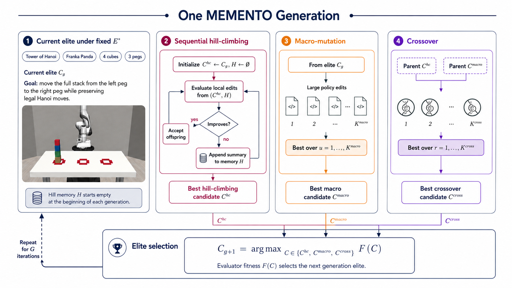
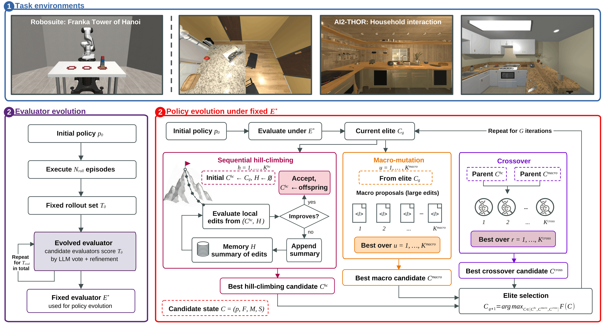
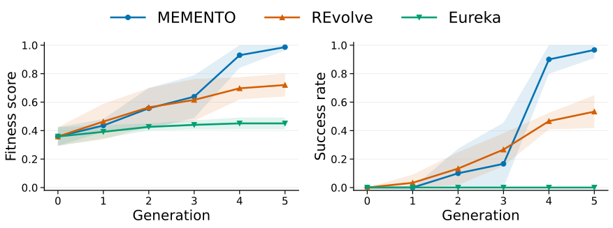
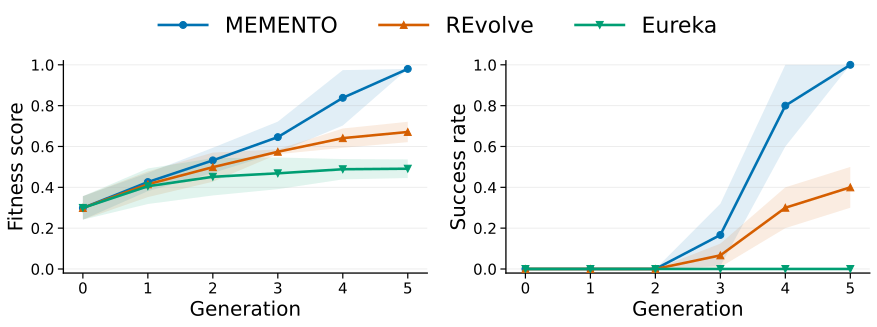
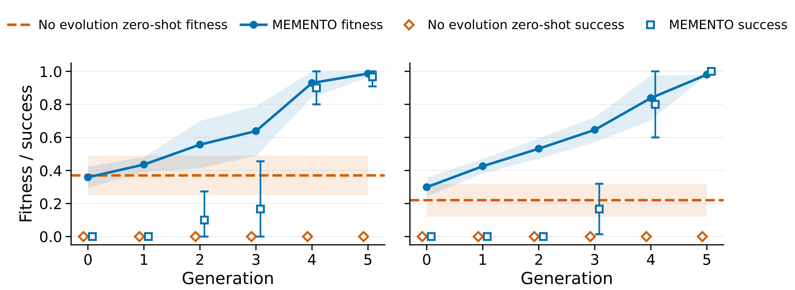
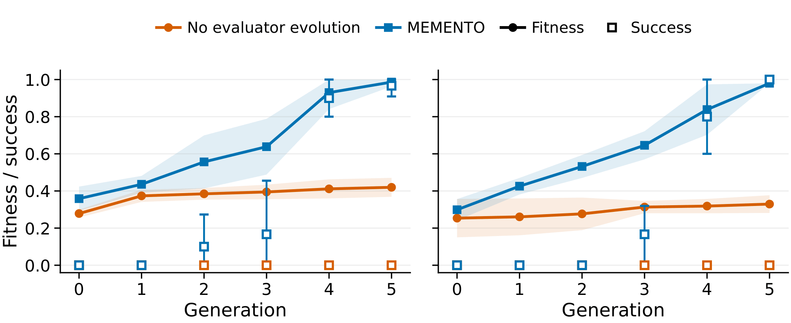
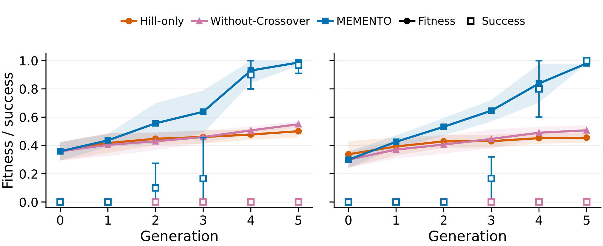
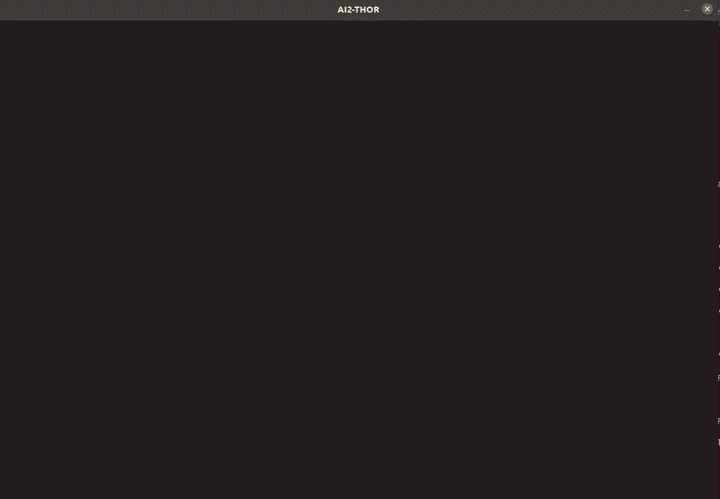

Refine through hill climbing
Sequential hill climbing proposes local policy edits. Improving edits are accepted, while rejected edits are summarized in memory and supplied to later proposals.
Örebro University
MEMENTO-evolved Tower-of-Hanoi task logic deployed on a physical Franka Panda.
Abstract
MEMENTO evolves executable robot policies through memory-guided memetic search. Long-horizon embodied tasks require many dependent actions before success can be observed, making sparse rollout feedback difficult to use for policy improvement. MEMENTO represents policies as executable programs and first evolves a rollout evaluator that provides scalar fitness and structured feedback. Under this fixed evaluator, policies are improved through memory-guided sequential hill climbing, macro-mutation, and crossover. We evaluate MEMENTO on Robosuite Franka Tower-of-Hanoi manipulation and AI2-THOR household interaction, where it outperforms adapted evolutionary baselines and generalizes to held-out object geometries and unseen scenes. The best evolved Robosuite policy is additionally transferred to a physical Franka robot.
Method
Each generation explores multiple forms of executable policy variation before selecting the highest-fitness candidate.

Sequential hill climbing proposes local policy edits. Improving edits are accepted, while rejected edits are summarized in memory and supplied to later proposals.
Macro mutation proposes broader modifications from the current elite, allowing MEMENTO to explore substantially different executable programs.
Crossover combines the best hill-climbing and macro-mutation candidates to produce additional executable policies.
The strongest hill, macro, and crossover candidates are compared by fitness, and the highest-scoring candidate becomes the next generation elite.
Architecture
MEMENTO first evolves an evaluator, then keeps it fixed while sequential hill climbing, macro-mutation, and crossover improve executable robot policies over generations.

Candidate evaluators score a fixed rollout set and are refined through LLM voting before the final evaluator is frozen for policy evolution.
Local policy edits are evaluated from the current hill candidate. Improving edits are accepted, while non-improving edits are summarized in memory H.
Larger policy modifications are proposed directly from the current elite to explore substantially different executable programs.
The best hill-climbing and macro-mutation candidates act as parents for crossover, producing additional policy candidates.
The best hill, macro, and crossover candidates are compared by fitness. The highest-scoring policy becomes the next generation elite.
Results
Under the same rollout budget, MEMENTO reaches substantially higher task success than the evolutionary baselines on both long-horizon domains.
Tower-of-Hanoi success
0.97 ± 0.06Household-interaction success
1.00 ± 0.00

Main evolution results. MEMENTO improves evaluator fitness and empirical success across generations on both Robosuite Tower-of-Hanoi and AI2-THOR household interaction.
Generalization
The final policies are evaluated on held-out object geometries in Robosuite and unseen kitchen scenes in AI2-THOR.
Robosuite object geometry


Held-out Robosuite object geometries. The asymmetric variant changes the grasp envelope, while the cylindrical variant changes the contact geometry.
AI2-THOR cross-scene transfer
Ablations
The ablations isolate the contributions of evolutionary search, evaluator evolution, and the complementary policy-search branches.
Twenty-four zero-shot policy candidates achieve partial fitness progress but zero task success in both domains. Full MEMENTO reaches 97% and 100%.

Policy evolution with a zero-shot evaluator produces no successful rollouts in either domain. Evolving the evaluator first provides feedback aligned with long-horizon task completion.

Hill-only and Without-Crossover improve evaluator fitness but never complete either task. Full MEMENTO combines local refinement, larger changes, and recombination to reach task-completing policies.

The best evolved Robosuite Tower-of-Hanoi policy transfers from simulation to a physical Franka Panda while preserving its task-level program logic.
9 successful trials out of 10
Result videos
The evolved task-level program executing on a physical Franka Panda.
Four-object long-horizon manipulation in simulation.

Code-as-policy execution in a partially observed household scene.
Citation
If you find MEMENTO useful in your research, please consider citing our work.
@article{sygkounas2026memento,
title = {MEMENTO: Memory-Guided Memetic Code-as-Policy Evolution},
author = {Sygkounas, Alkis and
Aregbede, Victor and
Loutfi, Amy and
Persson, Andreas},
journal = {arXiv preprint arXiv:2607.22832},
year = {2026},
url = {https://arxiv.org/abs/2607.22832}
}